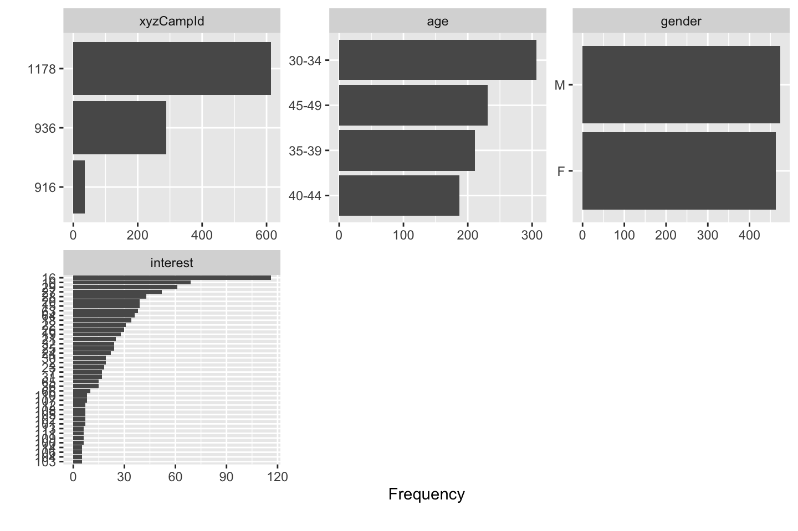
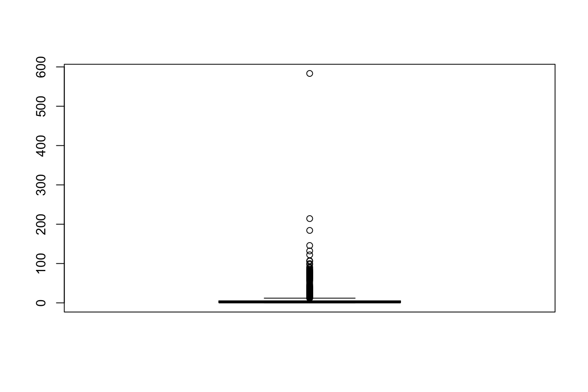
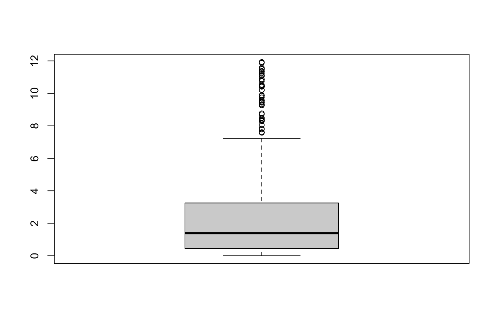
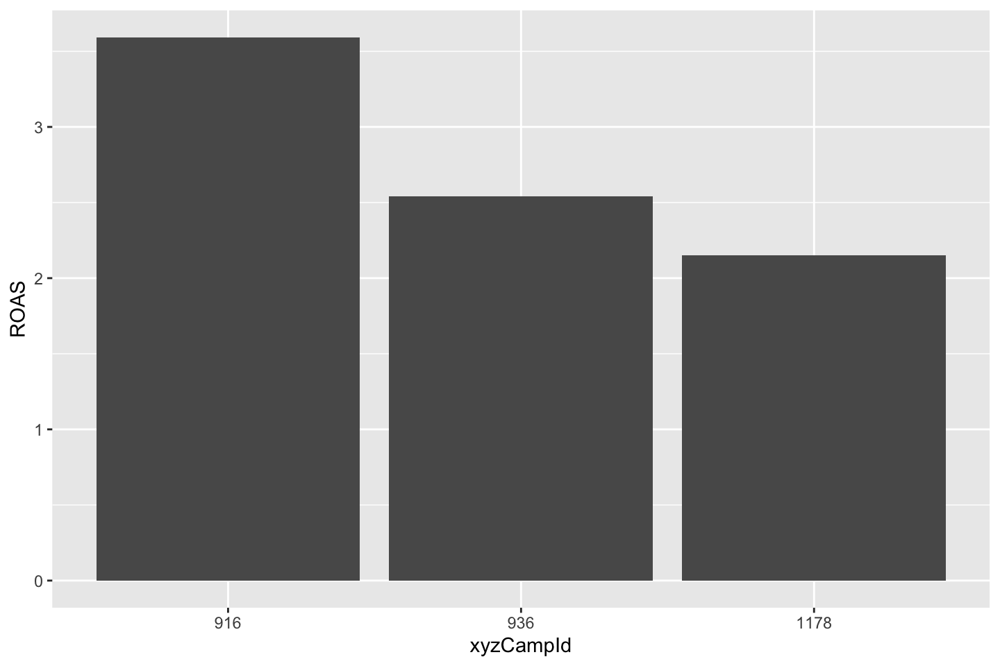
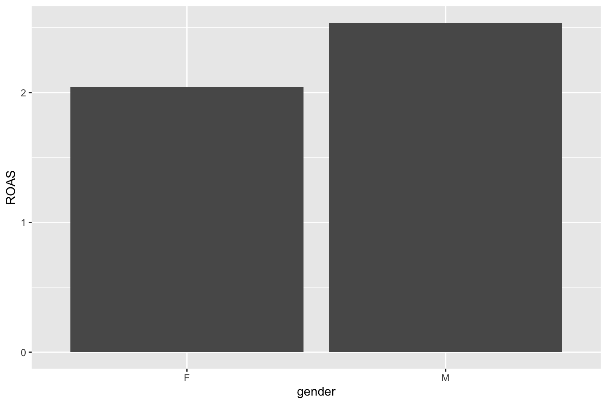
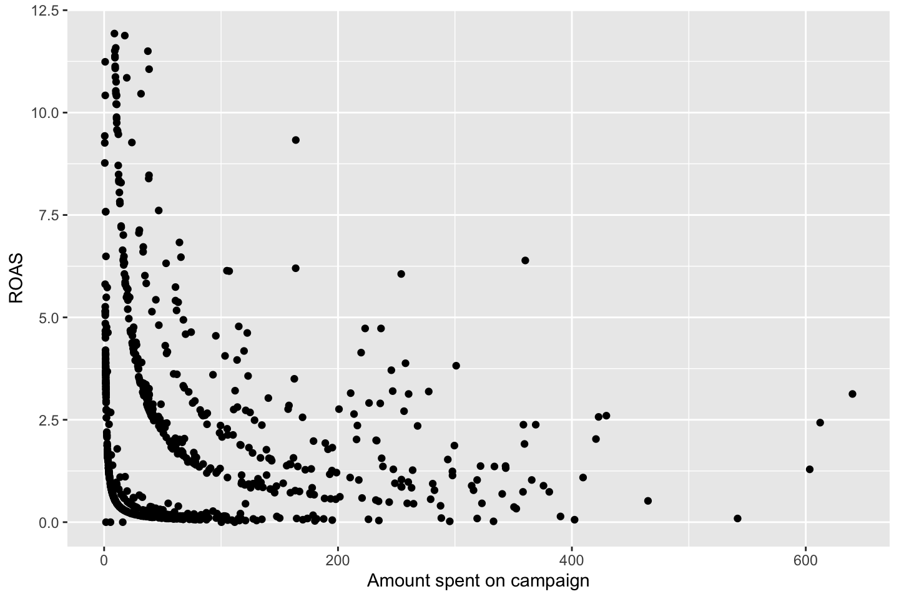

2.5 Predicting the Return on Advertising Spent
(Case and data source: kaggle.com)
2.5.1 1. Background
Along with Google’s search and display networks, Facebook is one of the big players when it comes to online advertising. As Facebook users interact with the platform, adding demographic information, liking particular pages and commenting on specific posts, Facebook builds a profile of that user based on who they are and what they’re interested in.
This fact makes Facebook very attractive for advertisers. Advertisers can create Facebook adverts, then create an ‘Audience’ for that advert or group of adverts. Audiences can be built from a range of attributes including gender, age, location and interests. This specific targeting means advertisers can tailor content appropriately for a specific audience, even if the product being marketed is the same.
For example, let’s imagine a company wants to advertise its new car. They may wish to promote one set of features, performance and the 2 kW stereo, to women in their early twenties. They might decide that they want to talk about it’s fuel efficiency and reduced emissions to men in their thirties, and they might want to push the spacious interior and safety rating to men and women in their thirties and early forties who are interested in Families magazine and who like pages of nappy and baby clothes manufacturers.
In 2016, Facebook’s revenue from advertising was 26bn, up from 17bn the year before. This compares to Google’s 79bn, the 638m that Twitter advertising made in Q4 2016, and $173m that LinkedIn made from ads in Q3 2016. These figures illustrate just how big an advertising platform is, although it faces challenges for the future with a decline in younger users in 2017, with generation Z moving to Snapchat and Instagram. When it comes to analyzing the Facebook adverts dataset, there are a lot of questions we can ask, and a lot of insight we can generate. However, from a business perspective we want to ask questions that will give us answers we can use to improve business performance.
2.5.2 2. Case study (Business Understanding Phase)
The company xyz is an e-marketing company. It earns money based on how many people click the ads and how many people actually purchase the product advertised. The company will receive from the manufacturer 5 for each user that clicks on ad and signs up in the e-commerce shop, and respectively, 100 for each registered user that buys the product. On the other hand, the xyz pays to Facebook to display the ads. The objective of the company xyz is to maximize the return on advertising spent, while minimizing the amount spent on advertising. In order to attain this objective, the company needs to identify the factors (e.g. spending, campaign type, customer type, etc.) influencing most significantly the return on advertising spent (ROAS) based on the available data.
The analytical objective in this case is to predict the Return on Advertising Spent (ROAS) using the dataset KAG_conversion_data.csv. Given the scope of this case study, we aim to set up a non-linear regression model. The model can be used either to predict the value of the target variable, ROAS, for future observations of the explanatory variables or to provide a better understanding of the relationships (form and direction) between dependent and independent variables.
2.5.3 3. The data (Data Understanding Phase)
The documentation describes the columns in the data as follows:
- ad_id: unique ID for each ad. It is just an identifier.
- xyz_campaign_id: an ID associated with each ad campaign of XYZ company
- fb_campaign_id: an ID associated with how Facebook tracks each campaign. Ignore this variable in the analysis
- age: age of the person to whom the ad is shown
- gender: gender of the person to whom the add is shown
- interest: a code specifying the category to which the person’s interest belongs (interests are as mentioned in the person’s Facebook public profile)
- Impressions: the number of times the ad was shown
- Clicks: number of clicks on for that ad
- Spent: Amount paid by company xyz to Facebook, to show that ad
- Total conversion: Total number of people who sign up to the webshop after seeing the ad (here we (the add company) receives 5$)
- Approved conversion/leads: Total number of people who bought the product after seeing the ad (here we (the add company) receives 10$)
We want to predict ROAS, that is return on advertising spending
2.5.4 4. Specific requirements:
2.5.4.1 4.1 Task 1 - Import and overview
Import and view the data. A critical step in the data mining process is to understand the variables, and further to ensure that the software interprets the variables in the correct way.
KAG_conversion_data <- read.csv("Data/1. MovingBeyondLinearity/FacebookCasestudy/KAG_conversion_data.csv")
2.5.4.2 4.2 Task 2 - Data inspection
Inspect your data and do the required variable adaptations and transformations. These may include: treating the missing data, treating the outliers, log transformations, binning, standardizing, and creating additional features (e.g. in this particular case, one needs to calculate the DV (ROAS), which is not ready available in the dataset).
NOTICE for the exam, we will not be asked to transform the data. Or at least the will specify what to do
In real practice, data preprocessing takes about 75% of the total time assigned to a project.
library(tidyverse)
dataTf <- KAG_conversion_data
glimpse(KAG_conversion_data) #Just a quick inspection## Rows: 1,143
## Columns: 11
## $ ad_id <int> 708746, 708749, 708771, 708815, 708818, 708820, 7…
## $ xyz_campaign_id <int> 916, 916, 916, 916, 916, 916, 916, 916, 916, 916,…
## $ fb_campaign_id <int> 103916, 103917, 103920, 103928, 103928, 103929, 1…
## $ age <chr> "30-34", "30-34", "30-34", "30-34", "30-34", "30-…
## $ gender <chr> "M", "M", "M", "M", "M", "M", "M", "M", "M", "M",…
## $ interest <int> 15, 16, 20, 28, 28, 29, 15, 16, 27, 28, 31, 7, 16…
## $ Impressions <int> 7350, 17861, 693, 4259, 4133, 1915, 15615, 10951,…
## $ Clicks <int> 1, 2, 0, 1, 1, 0, 3, 1, 1, 3, 0, 0, 0, 0, 7, 0, 1…
## $ Spent <dbl> 1.43, 1.82, 0.00, 1.25, 1.29, 0.00, 4.77, 1.27, 1…
## $ Total_Conversion <int> 2, 2, 1, 1, 1, 1, 1, 1, 1, 1, 1, 1, 1, 1, 1, 1, 1…
## $ Approved_Conversion <int> 1, 0, 0, 0, 1, 1, 0, 1, 0, 0, 0, 0, 0, 0, 1, 1, 0…Renaming variables
In general it is a good idea not to have special charactors in the variable name.
dataTf <- dataTf %>%
rename(xyzCampId = xyz_campaign_id, fbCampId = fb_campaign_id, impr = Impressions,
conv = Total_Conversion, appConv = Approved_Conversion)Create new features and calculate ROAS
Notice, that we use mutate() to make the new variables
- Click-through-rate: how many of the impressions became clicks.CTR = Clicks/Impressions
- Cost Per Click: how much on average did each click cost.CPC = Spent/Clicks
library(dplyr)
dataTf <- dataTf %>%
mutate(CTR = ((Clicks / impr) * 100), CPC = Spent / Clicks)
dataTf$CTR <- round(dataTf$CTR, 4) #NB: Sometime rounding is necessary for packages to work
dataTf$CPC <- round(dataTf$CPC, 2)Now we can also make the following variables:
- Conversion value: conval = 5 * conv
- Approved conversion value: appConVal = 100 * appConv
- Total conversion: totConVal = conval + appConVal
- Cost per conversion: costPerCon = Spent/totConv
- Return on Advertising Spend (the revenue as a % of advertising spend) : ROAS = totConVal/Spent
- Cost Per Mille: the cost of one thousand impressions. If our objective is ad exposure to increase brand awareness,this might be an important to measure. CPM = Spent/Impr *1000. I.e. how much of the overall spenditure divided by the amount of impressions. We multiply with 1000, to have more readable numbers instead of decimals.
dataTf <- dataTf %>%
mutate(totConv = conv + appConv,
conVal = conv * 5,
appConVal = appConv * 100) %>%
mutate(totConVal = conVal + appConVal) %>%
mutate(costPerCon = round(Spent / totConv, 2),
ROAS = round(totConVal / Spent, 2))
dataTf <- dataTf %>%
mutate(CPM = round((Spent / impr) * 1000, 2)) #Cost per Mille.We see that this produce a lot of INF, that is because some of the underlying varaibles contain NaNs, which is regarded as non available values, hence we cant do math with it. These observations will be identified in the following.
Hence: Dealing with missing, currupt and invalid data
# Decide between missing values imputation or deletion
table(is.na(dataTf)) ##
## FALSE TRUE
## 22647 213summary(dataTf) ## ad_id xyzCampId fbCampId age
## Min. : 708746 Min. : 916 Min. :103916 Length:1143
## 1st Qu.: 777632 1st Qu.: 936 1st Qu.:115716 Class :character
## Median :1121185 Median :1178 Median :144549 Mode :character
## Mean : 987261 Mean :1067 Mean :133784
## 3rd Qu.:1121804 3rd Qu.:1178 3rd Qu.:144658
## Max. :1314415 Max. :1178 Max. :179982
##
## gender interest impr Clicks
## Length:1143 Min. : 2.00 Min. : 87 Min. : 0.00
## Class :character 1st Qu.: 16.00 1st Qu.: 6504 1st Qu.: 1.00
## Mode :character Median : 25.00 Median : 51509 Median : 8.00
## Mean : 32.77 Mean : 186732 Mean : 33.39
## 3rd Qu.: 31.00 3rd Qu.: 221769 3rd Qu.: 37.50
## Max. :114.00 Max. :3052003 Max. :421.00
##
## Spent conv appConv CTR
## Min. : 0.00 Min. : 0.000 Min. : 0.000 Min. :0.00000
## 1st Qu.: 1.48 1st Qu.: 1.000 1st Qu.: 0.000 1st Qu.:0.01005
## Median : 12.37 Median : 1.000 Median : 1.000 Median :0.01600
## Mean : 51.36 Mean : 2.856 Mean : 0.944 Mean :0.01642
## 3rd Qu.: 60.02 3rd Qu.: 3.000 3rd Qu.: 1.000 3rd Qu.:0.02340
## Max. :639.95 Max. :60.000 Max. :21.000 Max. :0.10590
##
## CPC totConv conVal appConVal
## Min. :0.180 Min. : 0.0 Min. : 0.00 Min. : 0.0
## 1st Qu.:1.390 1st Qu.: 1.0 1st Qu.: 5.00 1st Qu.: 0.0
## Median :1.500 Median : 2.0 Median : 5.00 Median : 100.0
## Mean :1.499 Mean : 3.8 Mean : 14.28 Mean : 94.4
## 3rd Qu.:1.643 3rd Qu.: 4.0 3rd Qu.: 15.00 3rd Qu.: 100.0
## Max. :2.210 Max. :77.0 Max. :300.00 Max. :2100.0
## NA's :207
## totConVal costPerCon ROAS CPM
## Min. : 0.0 Min. : 0.000 Min. : 0.000 Min. :0.0000
## 1st Qu.: 5.0 1st Qu.: 1.048 1st Qu.: 0.800 1st Qu.:0.1500
## Median : 105.0 Median : 6.290 Median : 3.025 Median :0.2500
## Mean : 108.7 Mean : Inf Mean : Inf Mean :0.2392
## 3rd Qu.: 110.0 3rd Qu.:17.415 3rd Qu.:33.097 3rd Qu.:0.3300
## Max. :2300.0 Max. : Inf Max. : Inf Max. :1.5000
## NA's :3 NA's :3library(DataExplorer)
plot_missing(dataTf)Genereal rule of thumb, if we have less than 5%, we can exclude them, if more than 5%, then we should impute values, so we preserve the dataset. One must make aware of this
We just choose to ommit despite missing 18% in CPC
dataTfo = na.omit(dataTf) #Df with the NA's omitted
# Dividing by zero create Inf values
dataTfo$costPerCon <- ifelse(dataTfo$costPerCon == Inf, 0, dataTfo$costPerCon)
summary(dataTfo$costPerCon)## Min. 1st Qu. Median Mean 3rd Qu. Max.
## 0.000 3.072 9.215 16.131 19.773 332.990# Re-check the correctness of data type and adapt
dataTfo$xyzCampId=as.factor(dataTfo$xyzCampId)
dataTfo$age=as.factor(dataTfo$age)
dataTfo$gender=as.factor(dataTfo$gender)
dataTfo$interest=as.factor(dataTfo$interest) # too many (non-representative) categories?
dataTfo$appConv= as.numeric(dataTfo$appConv)
dataTfo$conv= as.numeric(dataTfo$conv)
dataTfo$impr= as.numeric(dataTfo$impr)
dataTfo$Clicks= as.numeric(dataTfo$Clicks)
dataTfo$totConv= as.numeric(dataTfo$totConv)
str(dataTfo)## 'data.frame': 936 obs. of 20 variables:
## $ ad_id : int 708746 708749 708815 708818 708889 708895 708953 708958 709059 709115 ...
## $ xyzCampId : Factor w/ 3 levels "916","936","1178": 1 1 1 1 1 1 1 1 1 1 ...
## $ fbCampId : int 103916 103917 103928 103928 103940 103941 103951 103952 103968 103978 ...
## $ age : Factor w/ 4 levels "30-34","35-39",..: 1 1 1 1 1 1 1 1 1 1 ...
## $ gender : Factor w/ 2 levels "F","M": 2 2 2 2 2 2 2 2 2 2 ...
## $ interest : Factor w/ 40 levels "2","7","10","15",..: 4 5 16 16 4 5 15 16 8 18 ...
## $ impr : num 7350 17861 4259 4133 15615 ...
## $ Clicks : num 1 2 1 1 3 1 1 3 7 1 ...
## $ Spent : num 1.43 1.82 1.25 1.29 4.77 ...
## $ conv : num 2 2 1 1 1 1 1 1 1 1 ...
## $ appConv : num 1 0 0 1 0 1 0 0 1 0 ...
## $ CTR : num 0.0136 0.0112 0.0235 0.0242 0.0192 0.0091 0.0425 0.0316 0.0477 0.0434 ...
## $ CPC : num 1.43 0.91 1.25 1.29 1.59 1.27 1.5 1.05 1.47 0.57 ...
## $ totConv : num 3 2 1 2 1 2 1 1 2 1 ...
## $ conVal : num 10 10 5 5 5 5 5 5 5 5 ...
## $ appConVal : num 100 0 0 100 0 100 0 0 100 0 ...
## $ totConVal : num 110 10 5 105 5 105 5 5 105 5 ...
## $ costPerCon: num 0.48 0.91 1.25 0.64 4.77 0.63 1.5 3.16 5.14 0.57 ...
## $ ROAS : num 76.92 5.49 4 81.4 1.05 ...
## $ CPM : num 0.19 0.1 0.29 0.31 0.31 0.12 0.64 0.33 0.7 0.25 ...
## - attr(*, "na.action")= 'omit' Named int [1:207] 3 6 11 12 13 14 16 18 21 25 ...
## ..- attr(*, "names")= chr [1:207] "3" "6" "11" "12" ...# Check distribution of variables (univariate analysis)
library(DataExplorer)
options(repr.plot.width=4, repr.plot.height=4)
plot_bar(dataTfo) #This is a really good tool to plot all bars
We can also check all of the distributions.
plot_histogram(dataTfo)
Now we can treat outliers.
# Treat outliers
attach(dataTfo)
# e.g. for ROAS
boxplot(ROAS)
We want to see the boxplot being like a plot.
We observe that some of the observations are outside of the whiskers, these appear to be outliers. We can identify these with the $out command, see the following.
boxplot(ROAS)$out
## [1] 76.92 81.40 82.68 23.76 34.31 35.23 62.13 12.40 68.63 65.22
## [11] 37.50 97.35 18.32 18.65 19.23 71.92 36.97 77.78 68.63 15.52
## [21] 75.54 66.88 81.40 74.47 31.44 20.15 20.83 66.46 36.21 122.09
## [31] 19.23 19.13 16.67 91.30 33.02 107.14 70.95 35.71 22.83 44.49
## [41] 28.23 16.56 23.97 214.29 62.50 31.72 21.04 34.37 184.21 58.01
## [51] 88.98 23.26 76.09 29.33 70.00 583.33 19.48 106.06 19.89 100.00
## [61] 78.36 57.38 23.18 33.98 14.59 39.62 25.42 145.83 62.50 29.33
## [71] 38.18 60.69 26.58 78.95 73.94 85.37 80.29 76.09 17.77 25.74
## [81] 22.98 64.02 85.37 72.92 38.46 45.26 17.02 22.27 16.56 23.57
## [91] 67.31 34.27 36.97 48.50 70.00 25.75 68.18 25.64 32.31 66.46
## [101] 41.98 132.08 33.33 12.20 69.54 67.31 69.18 13.62 13.92 52.38
## [111] 14.85 21.40 14.10 37.10 15.80 63.25 26.16 19.49 18.42 35.29
## [121] 27.85 13.62 13.32 21.78 24.88 23.03 60.69 40.08 37.77 39.92
## [131] 25.93 18.75 55.78 40.89 35.94 35.47 12.69 70.47 14.46 18.81
## [141] 12.22We see that all of these above are outliers.
# Here I assign outliers to a vector and remove them
outliers <- boxplot(ROAS
,plot=FALSE)$out #PLOT = TRUE will plot the boxplot
# remove the rows containing the outliers
dataTfo1 <- dataTfo[-which(ROAS %in% outliers),]
boxplot(dataTfo1$ROAS)
# Alterative ways to treat outliers exist Naturally there are other ways of identifying outliers, this is just one approach.
Looking at the new boxplot, we see that most observations are within the whiskers (the lines).
Notice, it does not have to be errors in the data and thus it does not necessarily be non representing of the data, thus one may not want to delete them
# Check bivariate distributions or measures of association
# pairs(data) # only numeric
# or one by one
ggplot(dataTfo1, aes(x=xyzCampId, y=ROAS)) + stat_summary(fun.y="mean", geom="bar")
ggplot(dataTfo1, aes(x=age, y=ROAS)) + stat_summary(fun.y="mean", geom="bar")
ggplot(dataTfo1, aes(x=gender, y=ROAS)) + stat_summary(fun.y="mean", geom="bar")
ggplot(dataTfo1, aes(x=interest, y=ROAS)) + stat_summary(fun.y="mean", geom="bar")
ggplot(dataTfo1, aes(Spent, ROAS)) + geom_point() + labs(x = "Amount spent on campaign", y = "ROAS")
options(repr.plot.width=6, repr.plot.height=3)
ggplot(dataTfo1, aes(Spent, totConv)) + geom_point() + labs(x = "Amount spent on campaign", y = "Total Conversions")
# Measure of associations
par(mfrow = c(1, 1))
library(corrplot)
cormatrix = corrplot(cor(dataTfo1 [, -c(1:6)]))
We seee that some variables appear to have a strong correlation with other variables, e.g. CTR and CPM.
We want to see how they interact with ROAS as well, to get an idea of wether they are positive and negative relationship.
NOTICE, this is based on a linear relationship between the variables. Since we are now in non linear models, we cannot use it the same way as when working in the linear scenarios. But we must be aware of variables that appear to have a really high correlation with one and other, hence we may exclude these.
The following is the same, but presented just with actual correlations.
cor(dataTfo1[,-c(1:6)],dataTfo1$ROAS)## [,1]
## impr -0.12495737
## Clicks -0.19118476
## Spent -0.18289935
## conv 0.09806281
## appConv 0.27926699
## CTR -0.11644181
## CPC -0.08201179
## totConv 0.15227797
## conVal 0.09806281
## appConVal 0.27926699
## totConVal 0.26170129
## costPerCon -0.37974060
## ROAS 1.00000000
## CPM -0.17622449
Other exploration techniques can be implemented. Data pre-processing remains an active area of research because of the huge amount of inconsistent or “dirty” data.
2.5.4.3 4.3 Task 3 - Building different models
Build several predictive models and evaluate their performance. First, consider reflecting about these specific questions:
Q1) Which of the so far introduced models can be applied to explain and predict the return on advertising spent (ROAS)? Later on, construct several models that answer to this question, using a training dataset.
Q2) Which sample should one use to evaluate the model? Furthermore, which model assessment and selection criteria applies in this case? Later on, evaluate the model based on applicable assessment and selection criteria.
Q3) Reflect about how one can improve the model prediction power.
# Splitting the data
library(ISLR)
smp_size <- floor(0.75 * nrow(dataTfo1))
set.seed(123)
train_ind <- sample(seq_len(nrow(dataTfo1)), size = smp_size)
trainTfo1 <- dataTfo1[train_ind, ]
testTfo1 <- dataTfo1[-train_ind, ]
2.5.4.3.1 A Generalized Additive Model (GAM) to predict ROAS
The questions that arise are:
- What subset of all the predictors can best explain and predict ROAS?
- What is the form of the relationships between them and ROAS?
Feature selection approaches include:
Generally looking at the variables “one by one,” to understand what features are important and to figure out how they contribute towards solving the problem.
Looking at the correlation matrix: If we are working with a model which assumes a linear relationship between the dependent and the independent variables, corr matrix can help us come up with an initial list of variable importance. However, corr matrix also works as a “rough informative tool” for nonlinear modelling.
Running automatic feature selection algorithms. Functions in R include, among others:
- c1. regsubsets() function in “leaps” library (presented in ISL, p. 244); used to select the best size model that contains a given number of predictors, where best is quantified using Residual Sum of Squares (RSS). Although regsubsets() is based on testing linear models, it works as a “rough” list for nonlinear models.
- c2. step.Gam() function in “gam” library for stepwise selection of variables in GAM models. This is useful when the number of predictors is not very high.
- c3. advanced feature selection methods based on other data-mining techniques, including but not only: random forests, Bayesian Networks, Neural Networks, or other. Notice, that we can use very complex methods of feature selection, and then construct a model that is more transparant, for instance GAMs
2.5.4.3.1.1 c1) Feature selection using regsubsets()
One may exclude ad_id and variables used to calculate our dependent variable ROAS, as they have a deterministic relation with it. The variable “interests” can be preprocessed to reduce the categories to the most representative ones, but for simplicity we keep it as it is. See later it creates some problems.
str(trainTfo1)## 'data.frame': 596 obs. of 20 variables:
## $ ad_id : int 1121532 1121642 781508 1121798 950068 776861 1121284 1121110 1121132 710480 ...
## $ xyzCampId : Factor w/ 3 levels "916","936","1178": 3 3 2 3 2 2 3 3 3 1 ...
## $ fbCampId : int 144612 144630 116397 144656 123438 115574 144571 144534 144537 104205 ...
## $ age : Factor w/ 4 levels "30-34","35-39",..: 3 4 1 1 1 4 1 1 1 1 ...
## $ gender : Factor w/ 2 levels "F","M": 2 2 1 1 2 2 2 2 2 1 ...
## $ interest : Factor w/ 40 levels "2","7","10","15",..: 18 11 22 12 3 2 25 6 9 5 ...
## $ impr : num 123126 99698 5040 107548 4012 ...
## $ Clicks : num 25 21 1 19 1 6 23 123 12 14 ...
## $ Spent : num 39.73 33.35 1.44 29.31 1.57 ...
## $ conv : num 2 1 1 1 1 1 1 6 4 1 ...
## $ appConv : num 1 0 0 0 0 0 0 2 2 1 ...
## $ CTR : num 0.0203 0.0211 0.0198 0.0177 0.0249 0.0364 0.0131 0.014 0.0104 0.0243 ...
## $ CPC : num 1.59 1.59 1.44 1.54 1.57 1.54 1.77 1.71 1.98 1.29 ...
## $ totConv : num 3 1 1 1 1 1 1 8 6 2 ...
## $ conVal : num 10 5 5 5 5 5 5 30 20 5 ...
## $ appConVal : num 100 0 0 0 0 0 0 200 200 100 ...
## $ totConVal : num 110 5 5 5 5 5 5 230 220 105 ...
## $ costPerCon: num 13.24 33.35 1.44 29.31 1.57 ...
## $ ROAS : num 2.77 0.15 3.47 0.17 3.18 0.54 0.12 1.09 9.27 5.81 ...
## $ CPM : num 0.32 0.33 0.29 0.27 0.39 0.56 0.23 0.24 0.21 0.31 ...
## - attr(*, "na.action")= 'omit' Named int [1:207] 3 6 11 12 13 14 16 18 21 25 ...
## ..- attr(*, "names")= chr [1:207] "3" "6" "11" "12" ...Now we can make the selection with forward selection.
library(leaps)
reg.fit = regsubsets(trainTfo1$ROAS ~ ., data = trainTfo1[,-c(1,3, 14:17)], method = "forward", nvmax=14)
reg.summary = summary(reg.fit)
reg.summary## Subset selection object
## Call: regsubsets.formula(trainTfo1$ROAS ~ ., data = trainTfo1[, -c(1,
## 3, 14:17)], method = "forward", nvmax = 14)
## 54 Variables (and intercept)
## Forced in Forced out
## xyzCampId936 FALSE FALSE
## xyzCampId1178 FALSE FALSE
## age35-39 FALSE FALSE
## age40-44 FALSE FALSE
## age45-49 FALSE FALSE
## genderM FALSE FALSE
## interest7 FALSE FALSE
## interest10 FALSE FALSE
## interest15 FALSE FALSE
## interest16 FALSE FALSE
## interest18 FALSE FALSE
## interest19 FALSE FALSE
## interest20 FALSE FALSE
## interest21 FALSE FALSE
## interest22 FALSE FALSE
## interest23 FALSE FALSE
## interest24 FALSE FALSE
## interest25 FALSE FALSE
## interest26 FALSE FALSE
## interest27 FALSE FALSE
## interest28 FALSE FALSE
## interest29 FALSE FALSE
## interest30 FALSE FALSE
## interest31 FALSE FALSE
## interest32 FALSE FALSE
## interest36 FALSE FALSE
## interest63 FALSE FALSE
## interest64 FALSE FALSE
## interest65 FALSE FALSE
## interest66 FALSE FALSE
## interest100 FALSE FALSE
## interest101 FALSE FALSE
## interest102 FALSE FALSE
## interest103 FALSE FALSE
## interest104 FALSE FALSE
## interest105 FALSE FALSE
## interest106 FALSE FALSE
## interest107 FALSE FALSE
## interest108 FALSE FALSE
## interest109 FALSE FALSE
## interest110 FALSE FALSE
## interest111 FALSE FALSE
## interest112 FALSE FALSE
## interest113 FALSE FALSE
## interest114 FALSE FALSE
## impr FALSE FALSE
## Clicks FALSE FALSE
## Spent FALSE FALSE
## conv FALSE FALSE
## appConv FALSE FALSE
## CTR FALSE FALSE
## CPC FALSE FALSE
## costPerCon FALSE FALSE
## CPM FALSE FALSE
## 1 subsets of each size up to 14
## Selection Algorithm: forward
## xyzCampId936 xyzCampId1178 age35-39 age40-44 age45-49 genderM
## 1 ( 1 ) " " " " " " " " " " " "
## 2 ( 1 ) " " " " " " " " " " " "
## 3 ( 1 ) " " " " " " " " " " " "
## 4 ( 1 ) " " " " " " " " " " " "
## 5 ( 1 ) " " " " " " " " " " " "
## 6 ( 1 ) " " " " " " " " " " " "
## 7 ( 1 ) " " " " " " " " " " " "
## 8 ( 1 ) " " " " " " " " " " " "
## 9 ( 1 ) " " " " " " " " " " " "
## 10 ( 1 ) " " " " " " " " "*" " "
## 11 ( 1 ) " " " " " " " " "*" " "
## 12 ( 1 ) " " " " " " " " "*" " "
## 13 ( 1 ) " " " " " " " " "*" " "
## 14 ( 1 ) " " " " " " " " "*" " "
## interest7 interest10 interest15 interest16 interest18 interest19
## 1 ( 1 ) " " " " " " " " " " " "
## 2 ( 1 ) " " " " " " " " " " " "
## 3 ( 1 ) " " " " " " " " " " " "
## 4 ( 1 ) " " " " " " " " " " " "
## 5 ( 1 ) " " " " " " " " " " " "
## 6 ( 1 ) " " " " " " " " " " " "
## 7 ( 1 ) " " " " " " " " " " " "
## 8 ( 1 ) " " " " " " " " " " " "
## 9 ( 1 ) " " " " "*" " " " " " "
## 10 ( 1 ) " " " " "*" " " " " " "
## 11 ( 1 ) " " " " "*" " " "*" " "
## 12 ( 1 ) " " " " "*" " " "*" " "
## 13 ( 1 ) " " " " "*" " " "*" " "
## 14 ( 1 ) " " " " "*" " " "*" " "
## interest20 interest21 interest22 interest23 interest24 interest25
## 1 ( 1 ) " " " " " " " " " " " "
## 2 ( 1 ) " " " " " " " " " " " "
## 3 ( 1 ) " " " " " " " " " " " "
## 4 ( 1 ) " " " " " " " " " " " "
## 5 ( 1 ) " " " " " " " " " " " "
## 6 ( 1 ) " " " " " " " " " " " "
## 7 ( 1 ) " " " " "*" " " " " " "
## 8 ( 1 ) " " " " "*" " " " " " "
## 9 ( 1 ) " " " " "*" " " " " " "
## 10 ( 1 ) " " " " "*" " " " " " "
## 11 ( 1 ) " " " " "*" " " " " " "
## 12 ( 1 ) " " " " "*" " " " " " "
## 13 ( 1 ) " " " " "*" " " " " " "
## 14 ( 1 ) " " " " "*" " " " " " "
## interest26 interest27 interest28 interest29 interest30 interest31
## 1 ( 1 ) " " " " " " " " " " " "
## 2 ( 1 ) " " " " " " " " " " " "
## 3 ( 1 ) " " " " " " " " " " " "
## 4 ( 1 ) " " " " " " " " " " " "
## 5 ( 1 ) " " " " " " " " " " " "
## 6 ( 1 ) " " " " " " " " " " " "
## 7 ( 1 ) " " " " " " " " " " " "
## 8 ( 1 ) " " " " " " " " " " " "
## 9 ( 1 ) " " " " " " " " " " " "
## 10 ( 1 ) " " " " " " " " " " " "
## 11 ( 1 ) " " " " " " " " " " " "
## 12 ( 1 ) " " " " " " " " " " " "
## 13 ( 1 ) " " " " " " " " " " " "
## 14 ( 1 ) " " " " " " " " " " " "
## interest32 interest36 interest63 interest64 interest65 interest66
## 1 ( 1 ) " " " " " " " " " " " "
## 2 ( 1 ) " " " " " " " " " " " "
## 3 ( 1 ) " " " " " " " " " " " "
## 4 ( 1 ) " " " " " " " " " " " "
## 5 ( 1 ) " " " " " " " " " " " "
## 6 ( 1 ) " " " " " " " " " " " "
## 7 ( 1 ) " " " " " " " " " " " "
## 8 ( 1 ) " " "*" " " " " " " " "
## 9 ( 1 ) " " "*" " " " " " " " "
## 10 ( 1 ) " " "*" " " " " " " " "
## 11 ( 1 ) " " "*" " " " " " " " "
## 12 ( 1 ) " " "*" " " " " " " " "
## 13 ( 1 ) " " "*" " " " " " " " "
## 14 ( 1 ) " " "*" " " " " " " " "
## interest100 interest101 interest102 interest103 interest104
## 1 ( 1 ) " " " " " " " " " "
## 2 ( 1 ) " " " " " " " " " "
## 3 ( 1 ) " " " " " " " " " "
## 4 ( 1 ) " " " " " " " " " "
## 5 ( 1 ) " " " " " " " " " "
## 6 ( 1 ) " " " " " " " " " "
## 7 ( 1 ) " " " " " " " " " "
## 8 ( 1 ) " " " " " " " " " "
## 9 ( 1 ) " " " " " " " " " "
## 10 ( 1 ) " " " " " " " " " "
## 11 ( 1 ) " " " " " " " " " "
## 12 ( 1 ) " " " " " " " " " "
## 13 ( 1 ) " " " " " " " " " "
## 14 ( 1 ) " " " " " " " " " "
## interest105 interest106 interest107 interest108 interest109
## 1 ( 1 ) " " " " " " " " " "
## 2 ( 1 ) " " " " " " " " " "
## 3 ( 1 ) " " " " " " " " " "
## 4 ( 1 ) " " " " " " " " " "
## 5 ( 1 ) " " " " " " " " " "
## 6 ( 1 ) " " " " " " " " " "
## 7 ( 1 ) " " " " " " " " " "
## 8 ( 1 ) " " " " " " " " " "
## 9 ( 1 ) " " " " " " " " " "
## 10 ( 1 ) " " " " " " " " " "
## 11 ( 1 ) " " " " " " " " " "
## 12 ( 1 ) " " " " " " " " " "
## 13 ( 1 ) " " " " " " " " " "
## 14 ( 1 ) " " " " " " " " " "
## interest110 interest111 interest112 interest113 interest114 impr
## 1 ( 1 ) " " " " " " " " " " " "
## 2 ( 1 ) " " " " " " " " " " " "
## 3 ( 1 ) " " " " " " " " " " "*"
## 4 ( 1 ) " " " " " " " " " " "*"
## 5 ( 1 ) " " " " " " " " " " "*"
## 6 ( 1 ) " " " " " " " " " " "*"
## 7 ( 1 ) " " " " " " " " " " "*"
## 8 ( 1 ) " " " " " " " " " " "*"
## 9 ( 1 ) " " " " " " " " " " "*"
## 10 ( 1 ) " " " " " " " " " " "*"
## 11 ( 1 ) " " " " " " " " " " "*"
## 12 ( 1 ) "*" " " " " " " " " "*"
## 13 ( 1 ) "*" " " " " " " " " "*"
## 14 ( 1 ) "*" " " " " "*" " " "*"
## Clicks Spent conv appConv CTR CPC costPerCon CPM
## 1 ( 1 ) " " " " " " " " " " " " "*" " "
## 2 ( 1 ) " " " " " " "*" " " " " "*" " "
## 3 ( 1 ) " " " " " " "*" " " " " "*" " "
## 4 ( 1 ) " " " " "*" "*" " " " " "*" " "
## 5 ( 1 ) " " " " "*" "*" " " " " "*" "*"
## 6 ( 1 ) " " " " "*" "*" "*" " " "*" "*"
## 7 ( 1 ) " " " " "*" "*" "*" " " "*" "*"
## 8 ( 1 ) " " " " "*" "*" "*" " " "*" "*"
## 9 ( 1 ) " " " " "*" "*" "*" " " "*" "*"
## 10 ( 1 ) " " " " "*" "*" "*" " " "*" "*"
## 11 ( 1 ) " " " " "*" "*" "*" " " "*" "*"
## 12 ( 1 ) " " " " "*" "*" "*" " " "*" "*"
## 13 ( 1 ) " " "*" "*" "*" "*" " " "*" "*"
## 14 ( 1 ) " " "*" "*" "*" "*" " " "*" "*"Recall, an asteriks indicates that a given variable is included in the corresponding model. The default is “1 subsets of each size up to 8,” but using “nvmax” option we can control as many variables as are desired.
Use a prediction error criteria (Adj^R2 BIC, Cp) to select the “best overall” model: names(reg.summary)
In this example \(R^2\) is applied.
reg.summary$rsq## [1] 0.1596916 0.2163240 0.3276550 0.3437687 0.3584745 0.3676564 0.3766836
## [8] 0.3843347 0.3880903 0.3913334 0.3946034 0.3973916 0.4003809 0.4033252Rsquare increases monotonically as more variables are included. This is expected; the model containing all predictors will always have the smallest RSS and the largest \(R^2\).
plot(reg.summary$adjr2, xlab = "Number of Variables", ylab = "Adjusted R2", type = "p", ylim = c(0.1, 1), main = " Adj R2 for each model")
grid(col = "darkgrey")
max.adjr2 = max(reg.summary$adjr2)
std.adjr2 = sd(reg.summary$adjr2)
abline(h = max.adjr2 + 0.2 * std.adjr2, col = "red", lty = 2)
abline(h = max.adjr2 - 0.2 * std.adjr2, col = "red", lty = 2)
The plot shows the size 10-11 is the minimum size for the subset for which the scores are within 0.2 standard deviations of optimum.
That is because the \(R^2\) does not significantly change. Therefore, we can just limit ourselves with a more simple model.
We can see how the selection changes if we use the full model
A common approach when dataset is small is to find best 10 variables using entire dataset.
Notice, that some researches will argue that this implies data leakage.
reg.fit = regsubsets(dataTfo1$ROAS ~ ., data = dataTfo1[,-c(1,3, 14:17)], method = "forward", nvmax=14)
summary(reg.fit)## Subset selection object
## Call: regsubsets.formula(dataTfo1$ROAS ~ ., data = dataTfo1[, -c(1,
## 3, 14:17)], method = "forward", nvmax = 14)
## 54 Variables (and intercept)
## Forced in Forced out
## xyzCampId936 FALSE FALSE
## xyzCampId1178 FALSE FALSE
## age35-39 FALSE FALSE
## age40-44 FALSE FALSE
## age45-49 FALSE FALSE
## genderM FALSE FALSE
## interest7 FALSE FALSE
## interest10 FALSE FALSE
## interest15 FALSE FALSE
## interest16 FALSE FALSE
## interest18 FALSE FALSE
## interest19 FALSE FALSE
## interest20 FALSE FALSE
## interest21 FALSE FALSE
## interest22 FALSE FALSE
## interest23 FALSE FALSE
## interest24 FALSE FALSE
## interest25 FALSE FALSE
## interest26 FALSE FALSE
## interest27 FALSE FALSE
## interest28 FALSE FALSE
## interest29 FALSE FALSE
## interest30 FALSE FALSE
## interest31 FALSE FALSE
## interest32 FALSE FALSE
## interest36 FALSE FALSE
## interest63 FALSE FALSE
## interest64 FALSE FALSE
## interest65 FALSE FALSE
## interest66 FALSE FALSE
## interest100 FALSE FALSE
## interest101 FALSE FALSE
## interest102 FALSE FALSE
## interest103 FALSE FALSE
## interest104 FALSE FALSE
## interest105 FALSE FALSE
## interest106 FALSE FALSE
## interest107 FALSE FALSE
## interest108 FALSE FALSE
## interest109 FALSE FALSE
## interest110 FALSE FALSE
## interest111 FALSE FALSE
## interest112 FALSE FALSE
## interest113 FALSE FALSE
## interest114 FALSE FALSE
## impr FALSE FALSE
## Clicks FALSE FALSE
## Spent FALSE FALSE
## conv FALSE FALSE
## appConv FALSE FALSE
## CTR FALSE FALSE
## CPC FALSE FALSE
## costPerCon FALSE FALSE
## CPM FALSE FALSE
## 1 subsets of each size up to 14
## Selection Algorithm: forward
## xyzCampId936 xyzCampId1178 age35-39 age40-44 age45-49 genderM
## 1 ( 1 ) " " " " " " " " " " " "
## 2 ( 1 ) " " " " " " " " " " " "
## 3 ( 1 ) " " " " " " " " " " " "
## 4 ( 1 ) " " " " " " " " " " " "
## 5 ( 1 ) " " " " " " " " " " " "
## 6 ( 1 ) " " " " " " " " " " " "
## 7 ( 1 ) " " " " " " " " " " " "
## 8 ( 1 ) " " " " " " " " " " " "
## 9 ( 1 ) " " " " " " " " " " " "
## 10 ( 1 ) " " " " " " " " " " " "
## 11 ( 1 ) " " " " " " " " "*" " "
## 12 ( 1 ) " " " " " " " " "*" " "
## 13 ( 1 ) " " " " " " " " "*" " "
## 14 ( 1 ) " " "*" " " " " "*" " "
## interest7 interest10 interest15 interest16 interest18 interest19
## 1 ( 1 ) " " " " " " " " " " " "
## 2 ( 1 ) " " " " " " " " " " " "
## 3 ( 1 ) " " " " " " " " " " " "
## 4 ( 1 ) " " " " " " " " " " " "
## 5 ( 1 ) " " " " " " " " " " " "
## 6 ( 1 ) " " " " " " " " " " " "
## 7 ( 1 ) " " " " " " " " " " " "
## 8 ( 1 ) " " " " " " " " " " " "
## 9 ( 1 ) " " " " " " " " " " " "
## 10 ( 1 ) " " " " "*" " " " " " "
## 11 ( 1 ) " " " " "*" " " " " " "
## 12 ( 1 ) " " " " "*" " " " " " "
## 13 ( 1 ) " " " " "*" " " " " " "
## 14 ( 1 ) " " " " "*" " " " " " "
## interest20 interest21 interest22 interest23 interest24 interest25
## 1 ( 1 ) " " " " " " " " " " " "
## 2 ( 1 ) " " " " " " " " " " " "
## 3 ( 1 ) " " " " " " " " " " " "
## 4 ( 1 ) " " " " " " " " " " " "
## 5 ( 1 ) " " " " " " " " " " " "
## 6 ( 1 ) " " " " " " " " " " " "
## 7 ( 1 ) " " " " "*" " " " " " "
## 8 ( 1 ) " " " " "*" " " " " " "
## 9 ( 1 ) " " " " "*" " " " " " "
## 10 ( 1 ) " " " " "*" " " " " " "
## 11 ( 1 ) " " " " "*" " " " " " "
## 12 ( 1 ) " " " " "*" " " " " " "
## 13 ( 1 ) " " " " "*" " " " " " "
## 14 ( 1 ) " " " " "*" " " " " " "
## interest26 interest27 interest28 interest29 interest30 interest31
## 1 ( 1 ) " " " " " " " " " " " "
## 2 ( 1 ) " " " " " " " " " " " "
## 3 ( 1 ) " " " " " " " " " " " "
## 4 ( 1 ) " " " " " " " " " " " "
## 5 ( 1 ) " " " " " " " " " " " "
## 6 ( 1 ) " " " " " " " " " " " "
## 7 ( 1 ) " " " " " " " " " " " "
## 8 ( 1 ) " " " " " " " " " " " "
## 9 ( 1 ) " " " " " " " " " " " "
## 10 ( 1 ) " " " " " " " " " " " "
## 11 ( 1 ) " " " " " " " " " " " "
## 12 ( 1 ) " " " " " " " " " " " "
## 13 ( 1 ) "*" " " " " " " " " " "
## 14 ( 1 ) "*" " " " " " " " " " "
## interest32 interest36 interest63 interest64 interest65 interest66
## 1 ( 1 ) " " " " " " " " " " " "
## 2 ( 1 ) " " " " " " " " " " " "
## 3 ( 1 ) " " " " " " " " " " " "
## 4 ( 1 ) " " " " " " " " " " " "
## 5 ( 1 ) " " " " " " " " " " " "
## 6 ( 1 ) " " " " " " " " " " " "
## 7 ( 1 ) " " " " " " " " " " " "
## 8 ( 1 ) " " "*" " " " " " " " "
## 9 ( 1 ) " " "*" " " " " " " " "
## 10 ( 1 ) " " "*" " " " " " " " "
## 11 ( 1 ) " " "*" " " " " " " " "
## 12 ( 1 ) " " "*" " " " " " " " "
## 13 ( 1 ) " " "*" " " " " " " " "
## 14 ( 1 ) " " "*" " " " " " " " "
## interest100 interest101 interest102 interest103 interest104
## 1 ( 1 ) " " " " " " " " " "
## 2 ( 1 ) " " " " " " " " " "
## 3 ( 1 ) " " " " " " " " " "
## 4 ( 1 ) " " " " " " " " " "
## 5 ( 1 ) " " " " " " " " " "
## 6 ( 1 ) " " " " " " " " " "
## 7 ( 1 ) " " " " " " " " " "
## 8 ( 1 ) " " " " " " " " " "
## 9 ( 1 ) " " " " " " " " " "
## 10 ( 1 ) " " " " " " " " " "
## 11 ( 1 ) " " " " " " " " " "
## 12 ( 1 ) " " " " " " " " " "
## 13 ( 1 ) " " " " " " " " " "
## 14 ( 1 ) " " " " " " " " " "
## interest105 interest106 interest107 interest108 interest109
## 1 ( 1 ) " " " " " " " " " "
## 2 ( 1 ) " " " " " " " " " "
## 3 ( 1 ) " " " " " " " " " "
## 4 ( 1 ) " " " " " " " " " "
## 5 ( 1 ) " " " " " " " " " "
## 6 ( 1 ) " " " " " " " " " "
## 7 ( 1 ) " " " " " " " " " "
## 8 ( 1 ) " " " " " " " " " "
## 9 ( 1 ) " " " " " " " " " "
## 10 ( 1 ) " " " " " " " " " "
## 11 ( 1 ) " " " " " " " " " "
## 12 ( 1 ) " " " " " " " " " "
## 13 ( 1 ) " " " " " " " " " "
## 14 ( 1 ) " " " " " " " " " "
## interest110 interest111 interest112 interest113 interest114 impr
## 1 ( 1 ) " " " " " " " " " " " "
## 2 ( 1 ) " " " " " " " " " " " "
## 3 ( 1 ) " " " " " " " " " " "*"
## 4 ( 1 ) " " " " " " " " " " "*"
## 5 ( 1 ) " " " " " " " " " " "*"
## 6 ( 1 ) " " " " " " " " " " "*"
## 7 ( 1 ) " " " " " " " " " " "*"
## 8 ( 1 ) " " " " " " " " " " "*"
## 9 ( 1 ) " " " " " " "*" " " "*"
## 10 ( 1 ) " " " " " " "*" " " "*"
## 11 ( 1 ) " " " " " " "*" " " "*"
## 12 ( 1 ) " " " " " " "*" " " "*"
## 13 ( 1 ) " " " " " " "*" " " "*"
## 14 ( 1 ) " " " " " " "*" " " "*"
## Clicks Spent conv appConv CTR CPC costPerCon CPM
## 1 ( 1 ) " " " " " " " " " " " " "*" " "
## 2 ( 1 ) " " " " " " "*" " " " " "*" " "
## 3 ( 1 ) " " " " " " "*" " " " " "*" " "
## 4 ( 1 ) " " " " " " "*" " " " " "*" "*"
## 5 ( 1 ) " " " " " " "*" "*" " " "*" "*"
## 6 ( 1 ) " " " " "*" "*" "*" " " "*" "*"
## 7 ( 1 ) " " " " "*" "*" "*" " " "*" "*"
## 8 ( 1 ) " " " " "*" "*" "*" " " "*" "*"
## 9 ( 1 ) " " " " "*" "*" "*" " " "*" "*"
## 10 ( 1 ) " " " " "*" "*" "*" " " "*" "*"
## 11 ( 1 ) " " " " "*" "*" "*" " " "*" "*"
## 12 ( 1 ) " " "*" "*" "*" "*" " " "*" "*"
## 13 ( 1 ) " " "*" "*" "*" "*" " " "*" "*"
## 14 ( 1 ) " " "*" "*" "*" "*" " " "*" "*"We want to select 10 variables.
coefi = coef(reg.fit
, id=10) #Selection 10 variables
names(coefi) # most important variables based on regsubsets() feature selection## [1] "(Intercept)" "interest15" "interest22" "interest36" "interest113"
## [6] "impr" "conv" "appConv" "CTR" "costPerCon"
## [11] "CPM"2.5.4.3.1.1.1 1) I run a linear regression using the selected features, to have a benchmark
In general, one should start with a simple model to see graudally advance, instead of jumping directly to complex models.
model1<-lm(ROAS ~ interest + impr + conv + appConv + CTR + costPerCon + CPM, data = trainTfo1)
summary(model1) # summary.aov(model1) #Alternatice##
## Call:
## lm(formula = ROAS ~ interest + impr + conv + appConv + CTR +
## costPerCon + CPM, data = trainTfo1)
##
## Residuals:
## Min 1Q Median 3Q Max
## -6.1662 -1.2349 -0.4432 0.7776 8.6722
##
## Coefficients:
## Estimate Std. Error t value Pr(>|t|)
## (Intercept) 3.3763879089 0.7060735443 4.782 0.0000022324 ***
## interest7 -0.0583638167 0.8693104092 -0.067 0.946496
## interest10 0.3734569279 0.7214261646 0.518 0.604900
## interest15 1.2644513305 0.8019953469 1.577 0.115455
## interest16 0.3374435422 0.7113702609 0.474 0.635434
## interest18 1.1057788779 0.7863738142 1.406 0.160237
## interest19 0.9323670080 0.8226657597 1.133 0.257562
## interest20 0.5455427694 0.7734543762 0.705 0.480902
## interest21 0.4776314482 0.8140258838 0.587 0.557611
## interest22 -0.9810753002 0.8151526846 -1.204 0.229282
## interest23 -0.3833780502 0.8244934737 -0.465 0.642125
## interest24 0.4104935167 0.8587144041 0.478 0.632817
## interest25 0.0810874657 0.8224831441 0.099 0.921501
## interest26 -0.3607817261 0.8259069717 -0.437 0.662405
## interest27 0.5381079815 0.7408381010 0.726 0.467933
## interest28 0.0740605292 0.7759433375 0.095 0.923996
## interest29 0.1688327587 0.7394183904 0.228 0.819473
## interest30 0.2578505667 0.9459553954 0.273 0.785277
## interest31 1.1640980299 1.0164662116 1.145 0.252608
## interest32 0.0403419742 0.8559559577 0.047 0.962426
## interest36 2.1016082503 0.9016484081 2.331 0.020122 *
## interest63 0.5435879396 0.7789099391 0.698 0.485545
## interest64 0.6639079122 0.7722974638 0.860 0.390355
## interest65 0.2431197639 0.9014227709 0.270 0.787487
## interest66 0.8330235765 1.0160487256 0.820 0.412648
## interest100 0.8516465674 1.2281375647 0.693 0.488323
## interest101 -0.0641588098 1.3666934608 -0.047 0.962574
## interest102 0.9276318226 1.3630425863 0.681 0.496437
## interest103 0.8208051392 1.2313704057 0.667 0.505321
## interest104 0.7144614519 1.4011137921 0.510 0.610309
## interest105 -0.0104297991 1.1441788217 -0.009 0.992730
## interest106 -0.4410980827 1.1341681728 -0.389 0.697488
## interest107 0.8812751901 1.0344524204 0.852 0.394627
## interest108 0.8096481829 1.1383717983 0.711 0.477241
## interest109 0.2773726276 1.1440075722 0.242 0.808516
## interest110 1.6981730219 1.0731149157 1.582 0.114117
## interest111 0.8419734890 1.2354163562 0.682 0.495823
## interest112 -0.8046055498 1.2397091379 -0.649 0.516591
## interest113 1.5852227480 1.1413885504 1.389 0.165439
## interest114 -0.9363468962 1.2231230818 -0.766 0.444280
## impr -0.0000030933 0.0000005615 -5.509 0.0000000556 ***
## conv -0.1835589139 0.0474635767 -3.867 0.000123 ***
## appConv 1.1139191669 0.0950624431 11.718 < 2e-16 ***
## CTR 109.1401641334 31.7080460628 3.442 0.000621 ***
## costPerCon -0.0195060636 0.0047454249 -4.110 0.0000455039 ***
## CPM -10.0887785837 2.3882226628 -4.224 0.0000280419 ***
## ---
## Signif. codes: 0 '***' 0.001 '**' 0.01 '*' 0.05 '.' 0.1 ' ' 1
##
## Residual standard error: 2.058 on 550 degrees of freedom
## Multiple R-squared: 0.413, Adjusted R-squared: 0.3649
## F-statistic: 8.598 on 45 and 550 DF, p-value: < 2.2e-16AIC(model1)## [1] 2597.989The model diagnostics
par(mfrow = c(2, 2))
plot(model1)
Notice, that the top right is the theoretical distribution (or quantiles) of a normal distribution. We see that the is a wave in the residuals, implying that there may be some non linearity.
Further inspecting the residuals
par(mfrow = c(1,1))
hist(model1$residuals)
The residuals look quite well
2.5.4.3.1.1.2 2) Linked to the topic of this lecture, run a non-liner model, such as the Generalized Additive Model (GAM) with smoothing splines.**
We have two available approaches at hand:
- Option 1: using “gam” function from “gam” package
- Option 2: using “gam” function from “mgcv” package
- Recall mgcv package and gam package may interact. Uncall one of them if you get an error.
library('mgcv')
set.seed(123)
gam.mgcv <- mgcv::gam(ROAS ~ interest + s(impr) + s(conv) + s(appConv) + s(CTR) + s(costPerCon) + s(CPM), data = trainTfo1) # "gam" function from "mgcv" package estimates the smoothness automatically based on cross-validation (LOOCV, the default) or REML (Restricted Maximum Likelihood)
summary(gam.mgcv)##
## Family: gaussian
## Link function: identity
##
## Formula:
## ROAS ~ interest + s(impr) + s(conv) + s(appConv) + s(CTR) + s(costPerCon) +
## s(CPM)
##
## Parametric coefficients:
## Estimate Std. Error t value Pr(>|t|)
## (Intercept) 2.17980 0.43775 4.980 0.000000869 ***
## interest7 0.24123 0.57911 0.417 0.6772
## interest10 0.18304 0.48420 0.378 0.7056
## interest15 0.38606 0.53880 0.717 0.4740
## interest16 0.11986 0.47583 0.252 0.8012
## interest18 -0.09142 0.52458 -0.174 0.8617
## interest19 0.82120 0.54766 1.499 0.1344
## interest20 0.13610 0.51544 0.264 0.7918
## interest21 0.02640 0.53909 0.049 0.9610
## interest22 0.09319 0.53946 0.173 0.8629
## interest23 -0.56172 0.54856 -1.024 0.3063
## interest24 -0.08992 0.57528 -0.156 0.8759
## interest25 -0.04603 0.55372 -0.083 0.9338
## interest26 -0.30219 0.55505 -0.544 0.5864
## interest27 0.51573 0.49750 1.037 0.3004
## interest28 0.12121 0.51861 0.234 0.8153
## interest29 -0.03154 0.49268 -0.064 0.9490
## interest30 -0.40478 0.62268 -0.650 0.5159
## interest31 0.83810 0.66915 1.252 0.2110
## interest32 0.26961 0.56769 0.475 0.6350
## interest36 1.12968 0.59284 1.906 0.0573 .
## interest63 -0.04652 0.51940 -0.090 0.9287
## interest64 0.41739 0.51161 0.816 0.4150
## interest65 0.03027 0.59451 0.051 0.9594
## interest66 0.52158 0.66676 0.782 0.4344
## interest100 -0.18099 0.82344 -0.220 0.8261
## interest101 0.13743 0.90918 0.151 0.8799
## interest102 -0.04860 0.90212 -0.054 0.9571
## interest103 0.47957 0.81182 0.591 0.5550
## interest104 -1.30671 0.94229 -1.387 0.1661
## interest105 1.19263 0.76381 1.561 0.1190
## interest106 0.24244 0.74505 0.325 0.7450
## interest107 0.32292 0.70132 0.460 0.6454
## interest108 -0.63161 0.75881 -0.832 0.4056
## interest109 -0.29230 0.76418 -0.383 0.7022
## interest110 0.53685 0.71649 0.749 0.4540
## interest111 0.68357 0.83983 0.814 0.4161
## interest112 0.36783 0.88298 0.417 0.6772
## interest113 0.49405 0.76593 0.645 0.5192
## interest114 -0.50182 0.80131 -0.626 0.5314
## ---
## Signif. codes: 0 '***' 0.001 '**' 0.01 '*' 0.05 '.' 0.1 ' ' 1
##
## Approximate significance of smooth terms:
## edf Ref.df F p-value
## s(impr) 6.429 7.371 15.745 < 2e-16 ***
## s(conv) 6.220 7.047 3.453 0.000984 ***
## s(appConv) 7.191 7.717 84.077 < 2e-16 ***
## s(CTR) 5.281 6.340 2.375 0.026540 *
## s(costPerCon) 7.980 8.690 28.832 < 2e-16 ***
## s(CPM) 3.160 4.015 4.666 0.001024 **
## ---
## Signif. codes: 0 '***' 0.001 '**' 0.01 '*' 0.05 '.' 0.1 ' ' 1
##
## R-sq.(adj) = 0.735 Deviance explained = 76.9%
## GCV = 2.027 Scale est. = 1.7676 n = 596We see from the approximate significance of the smooth terms, that the smoothed variables appear to be siginificant, hence the smoothing splines are justified. We can also see the edf (estimated degrees of freedom), for each of the variables.
The first parametric coefficients show how the varibles perform compared to the reference (baseline), we see that there are different p-values, where it looks as if interest 36 is the only significant, although we must remember that this is in reference to the baseline, hence it does not imply that the categories with p > 5% is insignificant. If we look further into the variable, we see that some of the categories have very few variables, hence we can bin the categories together. E.g.,
table(trainTfo1$interest)##
## 2 7 10 15 16 18 19 20 21 22 23 24 25 26 27 28 29 30 31 32
## 10 13 48 21 60 23 17 25 18 19 17 14 18 17 37 26 38 9 7 14
## 36 63 64 65 66 100 101 102 103 104 105 106 107 108 109 110 111 112 113 114
## 11 24 25 11 7 4 3 3 4 3 5 5 7 5 5 6 4 4 5 4E.g. interest 114 have only four obsevationbs, we can aggregate groups, e.g., by looking at the means of the groups.
aggregate(trainTfo1$ROAS,by = list(trainTfo1$interest),mean)| Group.1 | x |
|---|---|
| 2 | 2.3410000 |
| 7 | 2.2507692 |
| 10 | 2.2810417 |
| 15 | 3.1423810 |
| 16 | 2.3663333 |
| 18 | 2.8282609 |
| 19 | 2.8247059 |
| 20 | 2.9944000 |
| 21 | 2.6822222 |
| 22 | 0.5963158 |
| 23 | 1.4623529 |
| 24 | 2.2957143 |
| 25 | 1.8588889 |
| 26 | 1.3188235 |
| 27 | 1.5972973 |
| 28 | 1.6423077 |
| 29 | 2.4734211 |
| 30 | 2.4400000 |
| 31 | 3.5300000 |
| 32 | 2.0764286 |
| 36 | 4.4445455 |
| 63 | 2.2858333 |
| 64 | 2.6624000 |
| 65 | 2.4272727 |
| 66 | 2.8700000 |
| 100 | 3.8350000 |
| 101 | 1.9500000 |
| 102 | 3.3900000 |
| 103 | 1.7875000 |
| 104 | 2.3033333 |
| 105 | 0.9300000 |
| 106 | 1.1320000 |
| 107 | 3.1528571 |
| 108 | 3.2280000 |
| 109 | 1.1380000 |
| 110 | 4.3983333 |
| 111 | 3.6075000 |
| 112 | 1.9150000 |
| 113 | 3.7440000 |
| 114 | 1.0275000 |
We see that they are close to each other, where one could combine groups based on this.
For which variables, if any, is there evidence of a non-linear relationship with the response? in the output, the edf (estimated degrees of freedom) column allow us to interpret the degree of nonlinearity for each predictor.
# contrasts(trainTfo1$interest)
AIC(gam.mgcv) # decreases compared to linear model## [1] 2103.794Other checks
One should always check the residuals
par(mfrow = c(1,1))
plot(gam.mgcv$residuals)
qqnorm(gam.mgcv$residuals)
qqline(gam.mgcv$residuals)
hist((gam.mgcv$residuals))interpreting the partial effects of the smooth terms visually using plot(gam_model) (see p. 284 ISL).
par(mfrow = c(2, 2))
plot(gam.mgcv, se = T, col = "blue", scheme=1,unconditional = TRUE, residuals = TRUE) 

Holding all the other variables in the model fixed, return on advertising spent tends to decrease with increasing impr (the number of times the ad was shown). holding all the other variables in the model fixed, total people signing up to the webshop (conv) has no significant effect on ROAS. Holding all the other variables in the model fixed, total people purchasing the product (appConv) and click-through-rate (CTR) have a significant positive nonlinear effect on ROAS. However, the CI in some areas is also very large due to very few observations, thus more data is required to evaluate the results. Finally cost-per-click (CPM = Spent/Impr *1000) has a decreasing nonlinear effect on ROAS, but the effect is very uncertain given CI become very large when CPM >1. Overall, the relationships found are intuitive but the effec ts are not strong.
# Evaluating test MSE using using k-fold cross-validation
set.seed(1)
k=5
folds = sample(1:k, nrow(trainTfo1), replace = TRUE)
gam.err = matrix(NA, k)
gam.tss = matrix(NA, k)
cv.r2 = matrix(NA, k)
for (j in 1:k) {
gam.mgcv = mgcv::gam(ROAS ~ s(impr) + s(conv) + s(appConv) + s(CTR) + s(costPerCon) + s(CPM), data = trainTfo1[folds!=j,]) # folds !=j returns the in-sample data
pred = predict(gam.mgcv, trainTfo1[folds==j,])
gam.err[j] = mean((trainTfo1$ROAS[folds==j] - pred)^2)
gam.tss[j] = mean((trainTfo1$ROAS[folds==j] - mean(trainTfo1$ROAS[folds==j]))^2)
cv.r2[j] = 1 - gam.err[j]/gam.tss[j]
cv.r2[j]
}
cv.r2## [,1]
## [1,] 0.6894129
## [2,] 0.7195426
## [3,] 0.7299054
## [4,] 0.7580761
## [5,] 0.5879333We see the different R squares, this we are now going to take the mean of.
mean.cv.R2=apply (cv.r2, 2, mean)
mean.cv.R2## [1] 0.6969741The mean is 0.697. Now we can compare the model with the test partition.
Evaluating the model test MSE and R^2 using the test dataset
gam.pred = predict(gam.mgcv, testTfo1)
gam.err = mean((testTfo1$ROAS - gam.pred)^2)
gam.tss = mean((testTfo1$ROAS - mean(testTfo1$ROAS))^2)
test.r2 = 1 - gam.err/gam.tss
test.r2 # the % of explained variance (R^2 in the data test)## [1] 0.6703216We see that R2 is similar, hence the model does not appear to have high optimisim.
Accuracy
Accuracy: correlation Actual vs. Predicted values
actuals_preds <- data.frame(cbind(actuals=testTfo1$ROAS,predicteds=gam.pred))
correlation_accuracy <- cor(actuals_preds)
correlation_accuracy## actuals predicteds
## actuals 1.0000000 0.8305841
## predicteds 0.8305841 1.0000000
General discussion: Although the fitted GAM yields to a decent R^2 on the test set and cross-validation, it could further be evaluated in comparison with the fit of other models. It is also possible to improve the model by including additional variables. Product advertised or Price may improve the model fit. It is important to consider all possible input variables and make a good selection early in the analytical process.
2.5.4.3.1.2 c2) Feature selection using step.GAM
Notice, that this is just another approach.
in package gam, the analysist has to search for the effective df. One can create a scope list with possible splines for each continous variable. Below, we considered splines up to maximum 10 degrees of freedom.
Notice, that the categorical variables are just included as raw data, as we can’t take the polynomial of this.
library(gam)
#Making a list with the different models
scope_list = list("xyzCampId" = ~1 + xyzCampId,
"age" = ~1 + age,
"gender" = ~1 + gender,
"interest" = ~1 + interest,
"impr" = ~1 + impr + s(impr, df=2) + s(impr, df=3) + s(impr, df =4) + s(impr, df=5) + s(impr, df=6) + s(impr, df=7) + s(impr, df=8) + s(impr, df=9) + s(impr, df=10),
"Clicks" = ~1+Clicks+s(Clicks, df=2)+s(Clicks, df=3)+s(Clicks, df=4)+s(Clicks, df=5)+s(Clicks, df=6)+s(Clicks, df=7)+s(Clicks, df=8)+s(Clicks, df=9)+s(Clicks, df=10),
"Spent" = ~1 + Spent + s(Spent, df=2) + s(Spent, df=3) + s(Spent, df=4) + s(Spent, df=5) + s(Spent, df=6) + s(Spent, df=7) + s(Spent, df=8) + s(Spent, df=9) + s(Spent, df=10),
"conv" = ~1 + conv + s(conv, df=2) + s(conv, df=3) + s(conv, df=4) + s(conv, df=5) + s(conv, df=6) + s(conv, df=7) + s(conv, df=8) + s(conv, df=9) + s(conv, df=10),
"appConv" = ~1+appConv+s(appConv,df=2)+s(appConv,df=3)+s(appConv,df=4)+s(appConv,df=5) + s(appConv,df=6) + s(appConv,df=7) + s(appConv,df=8) + s(appConv,df=9) + s(appConv,df=10),
"CTR" = ~1 + CTR + s(CTR, df=2) + s(CTR, df=3) + s(CTR, df=4) + s(CTR, df=5) + s(CTR, df=6) + s(CTR, df=7) + s(CTR, df=8) + s(CTR, df=9) + s(CTR, df=10),
"CPC" = ~1 + CPC + s(CPC, df=2) + s(CPC, df=3) + s(CPC, df=4) + s(CPC, df=5) + s(CPC, df=6) + s(CPC, df=7) + s(CPC, df=8) + s(CPC, df=9) + s(CPC, df=10),
"CPM" = ~1 + CPM + s(CPM, df=2) + s(CPM, df=3) + s(CPM, df=4) + s(CPM, df=5) + s(CPM, df=6) + s(CPM, df=7) + s(CPM, df=8) + s(CPM, df=9) + s(CPM, df=10))
# Define the starting model
gam.start <- gam::gam(ROAS ~ xyzCampId + age + gender + interest + impr + Clicks + Spent + conv + appConv + CTR + CPC + CPM, data = trainTfo1) #Note, this is just linear
# Finally, search among different models
# Remove "tick / check mark" from the package mgcv if you get an error next
gam::step.Gam(gam.start,scope = scope_list)## Start: ROAS ~ xyzCampId + age + gender + interest + impr + Clicks + Spent + conv + appConv + CTR + CPC + CPM; AIC= 2611.094
## Step:1 ROAS ~ xyzCampId + age + gender + interest + impr + Clicks + Spent + conv + s(appConv, df = 2) + CTR + CPC + CPM ; AIC= 2541.326
## Step:2 ROAS ~ xyzCampId + age + gender + interest + impr + Clicks + Spent + conv + s(appConv, df = 3) + CTR + CPC + CPM ; AIC= 2487.485
## Step:3 ROAS ~ xyzCampId + age + gender + impr + Clicks + Spent + conv + s(appConv, df = 3) + CTR + CPC + CPM ; AIC= 2449.452
## Step:4 ROAS ~ xyzCampId + age + gender + impr + s(Clicks, df = 2) + Spent + conv + s(appConv, df = 3) + CTR + CPC + CPM ; AIC= 2409.099
## Step:5 ROAS ~ xyzCampId + age + gender + impr + s(Clicks, df = 2) + Spent + conv + s(appConv, df = 4) + CTR + CPC + CPM ; AIC= 2368.959
## Step:6 ROAS ~ xyzCampId + age + gender + impr + s(Clicks, df = 3) + Spent + conv + s(appConv, df = 4) + CTR + CPC + CPM ; AIC= 2347.551
## Step:7 ROAS ~ xyzCampId + age + gender + impr + s(Clicks, df = 3) + Spent + conv + s(appConv, df = 4) + CTR + s(CPC, df = 2) + CPM ; AIC= 2324.868
## Step:8 ROAS ~ xyzCampId + age + gender + impr + s(Clicks, df = 3) + Spent + conv + s(appConv, df = 5) + CTR + s(CPC, df = 2) + CPM ; AIC= 2302.618
## Step:9 ROAS ~ xyzCampId + age + gender + impr + s(Clicks, df = 4) + Spent + conv + s(appConv, df = 5) + CTR + s(CPC, df = 2) + CPM ; AIC= 2290.11
## Step:10 ROAS ~ xyzCampId + age + gender + impr + s(Clicks, df = 4) + Spent + conv + s(appConv, df = 6) + CTR + s(CPC, df = 2) + CPM ; AIC= 2279.844
## Step:11 ROAS ~ xyzCampId + age + gender + impr + s(Clicks, df = 4) + Spent + conv + s(appConv, df = 6) + CTR + s(CPC, df = 3) + CPM ; AIC= 2272.156
## Step:12 ROAS ~ xyzCampId + age + gender + impr + s(Clicks, df = 5) + Spent + conv + s(appConv, df = 6) + CTR + s(CPC, df = 3) + CPM ; AIC= 2265.412
## Step:13 ROAS ~ xyzCampId + age + gender + impr + s(Clicks, df = 5) + Spent + conv + s(appConv, df = 7) + CTR + s(CPC, df = 3) + CPM ; AIC= 2261.135
## Step:14 ROAS ~ xyzCampId + age + gender + impr + s(Clicks, df = 5) + Spent + conv + s(appConv, df = 7) + s(CTR, df = 2) + s(CPC, df = 3) + CPM ; AIC= 2256.847
## Step:15 ROAS ~ xyzCampId + gender + impr + s(Clicks, df = 5) + Spent + conv + s(appConv, df = 7) + s(CTR, df = 2) + s(CPC, df = 3) + CPM ; AIC= 2253.772
## Step:16 ROAS ~ xyzCampId + gender + impr + s(Clicks, df = 6) + Spent + conv + s(appConv, df = 7) + s(CTR, df = 2) + s(CPC, df = 3) + CPM ; AIC= 2250.892
## Step:17 ROAS ~ xyzCampId + impr + s(Clicks, df = 6) + Spent + conv + s(appConv, df = 7) + s(CTR, df = 2) + s(CPC, df = 3) + CPM ; AIC= 2249.067
## Step:18 ROAS ~ xyzCampId + impr + s(Clicks, df = 6) + Spent + s(appConv, df = 7) + s(CTR, df = 2) + s(CPC, df = 3) + CPM ; AIC= 2247.226
## Step:19 ROAS ~ xyzCampId + impr + s(Clicks, df = 6) + s(appConv, df = 7) + s(CTR, df = 2) + s(CPC, df = 3) + CPM ; AIC= 2245.43
## Step:20 ROAS ~ impr + s(Clicks, df = 6) + s(appConv, df = 7) + s(CTR, df = 2) + s(CPC, df = 3) + CPM ; AIC= 2243.744
## Step:21 ROAS ~ impr + s(Clicks, df = 6) + s(appConv, df = 8) + s(CTR, df = 2) + s(CPC, df = 3) + CPM ; AIC= 2242.46
## Step:22 ROAS ~ impr + s(Clicks, df = 7) + s(appConv, df = 8) + s(CTR, df = 2) + s(CPC, df = 3) + CPM ; AIC= 2241.376
## Step:23 ROAS ~ impr + s(Clicks, df = 7) + s(appConv, df = 8) + s(CTR, df = 2) + s(CPC, df = 4) + CPM ; AIC= 2241.011
## Step:24 ROAS ~ impr + s(Clicks, df = 7) + s(appConv, df = 8) + s(CTR, df = 3) + s(CPC, df = 4) + CPM ; AIC= 2240.781
## Step:25 ROAS ~ impr + s(Clicks, df = 8) + s(appConv, df = 8) + s(CTR, df = 3) + s(CPC, df = 4) + CPM ; AIC= 2240.731## Call:
## gam::gam(formula = ROAS ~ impr + s(Clicks, df = 8) + s(appConv,
## df = 8) + s(CTR, df = 3) + s(CPC, df = 4) + CPM, data = trainTfo1,
## trace = FALSE)
##
## Degrees of Freedom: 595 total; 570 Residual
## Residual Deviance: 1368.37The last model is the best model, hence
gam::gam(formula = ROAS ~ impr + s(Clicks, df = 5) + s(appConv,df = 5) + s(CTR, df = 3) + s(CPC, df = 4) + CPM, data = trainTfo1,trace = FALSE)
- AIC is used internally to pick the best model.
- This is reported in the function output at every step.
- The “best” model meaning it has the lowest AIC in the space it has searched.
- In this case, the best model was:
- ROAS ~ impr + s(Clicks, df = 5) + s(appConv,df = 5) + s(CTR, df = 3) + s(CPC, df = 4) + CPM.
Next, run the recommended model and evaluate the AIC. Is it better than the previous ones?
library(gam)
#The model found in gam.step()
gam.step <- gam::gam(ROAS ~ impr + s(Clicks, df = 5) + s(appConv,df = 5) + s(CTR, df = 3) + s(CPC, df = 4) + CPM, data = trainTfo1)
summary(gam.step)##
## Call: gam::gam(formula = ROAS ~ impr + s(Clicks, df = 5) + s(appConv,
## df = 5) + s(CTR, df = 3) + s(CPC, df = 4) + CPM, data = trainTfo1)
## Deviance Residuals:
## Min 1Q Median 3Q Max
## -4.1065 -0.9782 -0.4980 0.6788 6.5816
##
## (Dispersion Parameter for gaussian family taken to be 2.5114)
##
## Null Deviance: 3969.325 on 595 degrees of freedom
## Residual Deviance: 1446.543 on 575.9999 degrees of freedom
## AIC: 2261.843
##
## Number of Local Scoring Iterations: NA
##
## Anova for Parametric Effects
## Df Sum Sq Mean Sq F value Pr(>F)
## impr 1 77.85 77.85 30.9991 0.00000003963 ***
## s(Clicks, df = 5) 1 315.38 315.38 125.5807 < 2.2e-16 ***
## s(appConv, df = 5) 1 958.24 958.24 381.5628 < 2.2e-16 ***
## s(CTR, df = 3) 1 3.49 3.49 1.3895 0.23897
## s(CPC, df = 4) 1 70.54 70.54 28.0879 0.00000016536 ***
## CPM 1 15.41 15.41 6.1352 0.01354 *
## Residuals 576 1446.54 2.51
## ---
## Signif. codes: 0 '***' 0.001 '**' 0.01 '*' 0.05 '.' 0.1 ' ' 1
##
## Anova for Nonparametric Effects
## Npar Df Npar F Pr(F)
## (Intercept)
## impr
## s(Clicks, df = 5) 4 35.223 < 2.2e-16 ***
## s(appConv, df = 5) 4 99.433 < 2.2e-16 ***
## s(CTR, df = 3) 2 5.207 0.005736 **
## s(CPC, df = 4) 3 14.083 0.000000007189 ***
## CPM
## ---
## Signif. codes: 0 '***' 0.001 '**' 0.01 '*' 0.05 '.' 0.1 ' ' 1par(mfrow = c(2, 3))
plot(gam.step, se = T, col = "blue")AIC(gam.step)## [1] 2261.843Compare AIC values for all fitted models
AIC(model1, gam.mgcv, gam.step) | df | AIC | |
|---|---|---|
| model1 | 47.00000 | 2597.989 |
| gam.mgcv | 39.72367 | 1640.318 |
| gam.step | 8.00000 | 2261.843 |
We see that the second approach appear to be better than the step model.
2.5.4.3.1.3 c3) Fetaure selection using random forest
Advanced feature selection methods is an active domain of research. Modern techniques include, among others, using random forests to find a set of predictors that best explains the variance in the response variable (Random forests models is covered in Ch.8). For a review of all methods, consider this suplementary readings: A. Jović, K. Brkić and N. Bogunović “A review of feature selection methods with applications.”
Feature selection using Random Forest (RF)
RF is covered in-depth in the next lectures
library(party)
cf1 <- cforest(trainTfo1$ROAS ~ . , data = trainTfo1[,-c(1, 3, 14:17)]
,control=cforest_unbiased(mtry=2,ntree=100))
#We sort the variables for where importance is decreasing
sort(varimp(cf1), decreasing = TRUE) ## appConv costPerCon Clicks Spent impr conv
## 4.982585204 2.651832080 1.193535977 1.028742086 0.664008402 0.269207329
## CPM xyzCampId CTR age CPC interest
## 0.248213011 0.225695612 0.136556541 0.119650200 0.089944044 0.042268625
## gender
## 0.009347033Based on the estimated variable importance, select the most relevant ones. Different feature selection methods, yield to slighly different variables, but majority coincide.
library(mgcv)
gam.rforest <- mgcv::gam(ROAS ~ s(appConv) + s(costPerCon) + s(Spent) + s(Clicks) + s(impr) + s(conv) + s(CPM) + xyzCampId + s(CTR), data = trainTfo1)
summary(gam.rforest)##
## Family: gaussian
## Link function: identity
##
## Formula:
## ROAS ~ s(appConv) + s(costPerCon) + s(Spent) + s(Clicks) + s(impr) +
## s(conv) + s(CPM) + xyzCampId + s(CTR)
##
## Parametric coefficients:
## Estimate Std. Error t value Pr(>|t|)
## (Intercept) 2.6312 0.3864 6.809 2.57e-11 ***
## xyzCampId936 -0.4511 0.3706 -1.217 0.224
## xyzCampId1178 -0.2580 0.4153 -0.621 0.535
## ---
## Signif. codes: 0 '***' 0.001 '**' 0.01 '*' 0.05 '.' 0.1 ' ' 1
##
## Approximate significance of smooth terms:
## edf Ref.df F p-value
## s(appConv) 7.475 7.871 90.791 < 2e-16 ***
## s(costPerCon) 8.052 8.727 29.497 < 2e-16 ***
## s(Spent) 1.000 1.000 0.368 0.544537
## s(Clicks) 3.372 4.335 1.748 0.127220
## s(impr) 5.979 6.988 2.725 0.008853 **
## s(conv) 6.429 7.214 4.220 0.000236 ***
## s(CPM) 3.506 4.434 4.058 0.002305 **
## s(CTR) 5.515 6.594 2.771 0.008908 **
## ---
## Signif. codes: 0 '***' 0.001 '**' 0.01 '*' 0.05 '.' 0.1 ' ' 1
##
## R-sq.(adj) = 0.74 Deviance explained = 75.9%
## GCV = 1.8726 Scale est. = 1.7334 n = 596discuss sig.
AIC(gam.rforest)## [1] 2063.802Compare AIC values for all fitted models
AIC(model1, gam.mgcv, gam.step, gam.rforest) | df | AIC | |
|---|---|---|
| model1 | 47.00000 | 2597.989 |
| gam.mgcv | 39.72367 | 1640.318 |
| gam.step | 8.00000 | 2261.843 |
| gam.rforest | 45.32798 | 2063.802 |
Evaluate the gam.rforest using k-fold cv-error, MSE and R^2 as done before with gam.mgcv.
Conclude about the best model.